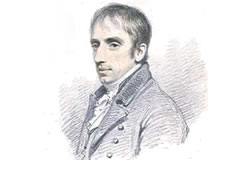
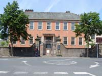
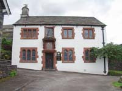
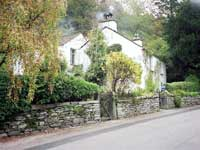
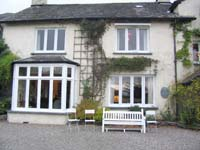
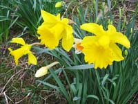
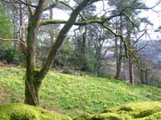
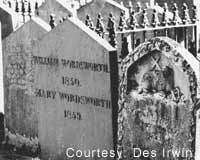

A Biography of William Wordsworth

It can be safely said that almost every visitor to the Lake District is beguiled by the landscape, but William Wordsworth was besotted, as any reader of his works will soon be aware.A contemporary so rightly observed,
He found words to express his sensations.
There is no record of the poet's reaction to an earlier description by Daniel Defoe that the area was the most barren and frightful he had ever seen. Nor, of course is he able to empathise with Alfred Wainwright, who, when standing on Orrest Head above Windermere, described the scene in one of his many books in terms of,
Here, the promised land is seen in all its glory!
And what of Millom poet, Norman Nicholson's description of the Wastwater screes,
..like the inverted arches of a Gothic Cathedral.

And so to William Wordsworth - 1770-1850.Born on 7th April, 1770, the second of five children, in the west Cumbrian town of Cockermouth. His father John’s employment as lawyer to the land-owner, Sir John Lowther, enabled the family to have a fair standard of living in an area not known for its prosperity.
Wordsworth senior was often absent on Lowther business, and William, in the early years, came to be regarded as a solitary child, estranged from others with the exception of his younger sister, Dorothy, with whom he shared a close bond.
It may be that behaviour problems were a major factor in his parents decision to send him, at the age of 6 years, to live with his maternal grandparents in the north Cumbrian town of Penrith, where he attended the local school.We are told that the grandparents were cold authority figures which did nothing to aid William's emotional development and the problems were compounded by the death of his mother in 1778. This event fractured the family unit completely, and his father, unable to raise the children alone, sent William's siblings to live with others.

In 1779 Wiliam moved once more, this time to take a Grammar School place in the rural village of Hawkshead near Windermere. He was boarded in the home of Anne Tyson and her husband, a couple in their 60’s. Anne's financial accounts books and a desk in which the young William carved his initials, are on display in the school museum. His brothers joined him later, but Dorothy was fostered with her mother's cousin, Elizabeth Threlkeld, in the Yorkshire town of Halifax. She and William were not to see each other again for several years.Further disorder to his life was added, when, in 1783, his father died, and still being owed a considerable amount of money by the Lowther Estate; a dispute not settled until 20 years later.
He was granted a place at Cambridge University in October 1787, and reputedly remained academically undistinguished and without any clear goal. This is not really surprising, considering what he had gone through before.
An impulsive gesture in July, 1790, saw him leave England on a walking tour of France and Switzerland in the company of his friend, Robert Jones. He was much impressed and influenced by what he saw and heard, not only by the scenery, but also by the politics of the emerging French Republican Cause. Sections of The Prelude, written much later, recalls his journey over the Simplon Pass.
"Brook and road were fellow travelers in this gloomy Pass,
And with them did we journey several hours
At a slow step. The immeasureable height
Of woods decaying, never to be decayed,
The stationary blasts of waterfalls,
And in the narrow rent, at every turn,
Winds thwarting winds bewildered and folorn,
The torrents shooting from the clear blue sky,
The rocks that muttered close upon our ears."
Returning to England three months later, he spent the winter in London attending political meetings, among other pursuits. The meetings were generally in support of the French Republican Movement.
Later, he headed for Wales, and joined up again with Robert Jones, but it was not long before he returned to France.
“France lured me forth; the realm that I had crossed
So lately, journeying toward the snow-clad Alps.
But now relinquishing the scrips and staff,
And all enjoyment which the summer sun
Sheds round the steps of those who meet the day
With motion constant as his own I went
Prepared to sojourn in a pleasant town,
Washed by the current of the stately Loire”
He stayed in Paris for a little while before moving on to Orleans in the south. It was here that he met and fell in love with Annette Vallon, the daughter of a surgeon. Her parents did not approve of the relationship and attempted to ban her from seeing him. However, shortly after Williams return to England, she gave birth to a daughter, Caroline, on December 15 1792.
He remained on the south coastal area of England in the hope that he could speedily return to France and Annette, but the approaching war between the two countries rendered this impossible.
He resumed his dejected wanderings, some of which took him back to Wales and the area around Tintern Abbey, founded in 1131.
Thomas de Quincey was later to observe that this period of aimless wanderings were the formative years of his poetic development.
The year of 1794 saw his return to the north of England where he found his long-standing friend, Raisley Calvert seriously ill. He cared for Calvert until his death and was left a small legacy in gratitude. Wordsworth later wrote,
“Calvert! It must not be unheard by them
Who may respect my name, that I to thee
Owed many years of early liberty.
This care was thine when sickness did condemn
Thy youth to hopeless wasting, root and stem."
It was at this time that he and Dorothy were reunited, he aged 24, she 22.
Long hours were spent in discussion of their futures before arriving at the conclusion that only by staying together would they succeed.
The tenancy offer of “Racedown”, a remote Dorset cottage, was eagerly accepted now that their income was supplemented by the proceeds from the small legacy left to William by Raisley Calvert. They moved to “Racedown” in December 1795 and remained there happily until 1797.
Samuel Taylor Coleridge became a regular visitor, and it was partly at his instigation that led to the Wordsworths renting “Alfoxden”, a large mansion near the village of Holford Glen in Somerset.
This seems to have been a happy productive period for all.
Together with Coleridge and other visitors, they roamed the countryside day and night with a notebook in which to record observations as ideas for future writings. One of these visitors was John Thelwall, a political activist with Republican leanings. He had already been arrested on the orders of a nervous Government as an agitator.
Thelwall's presence at Alfoxden, coupled with reports of the nocturnal wanderings again aroused suspicions and a government spy was dispatched to monitor their movements. It is possible that this was a factor in the refusal to a request for an extension of tenancy of Alfoxden.
The Autumn of 1798 found William, Dorothy and Coleridge disembarking in the port of Hamburg, ostensibly to learn the language and study Natural Sciences. Shortly after their arrival they went their separate ways. The Wordsworths spent a particularly harsh winter in the town of Goslar in the region of the Hartz Mountains. Evidence of their distress in the cold conditions is found in, “On one of the coldest days of the Century”:
“A plague on your languages, German and Norse.
Let me have the songs of the kettle and the tongs and the poker, instead of that house
That gallops away with such fury and force
On this dreary dull plate of black metal."
They returned to England in the late Spring of the following year to stay with the Hutchinson Family on a farm near Stockton-on-Tees. The farm was owned by the brother of Mary Hutchinson, whom William had not seen since primary school days in Penrith.
Coleridge readily accepted their invitation to stay. He and William walked the surrounding countryside, and one excursion took them further afield to Grasmere. Wordsworth was smitten by the beauty of the village and its surroundings and vowed then and there to make it his home as soon as possible.

He was able to rent Dove Cottage, and in the December, he and Dorothy took up residence after walking much of the way from Stockton. One report says that in order to “arrive in style”, they hired a horse-drawn carriage for the final part of the journey from Ambleside. Thus began a settled period for him and his sister.They explored the area from end to end, noting scenes and events, some of which were later included in his compositions.
“To my Sister”:
“My sister(‘tis now a wish of mine)
Now that our morning meal is done,
Make haste, your morning task resign;
Come forth and feel the sun”.
Mary Hutchinson began to take on more and more importance in his life and marriage seemed inevitable. Probably, with this in mind, he and Dorothy, in the summer of 1802, visited Annette Vallon and daughter Caroline. They appear to have parted on good terms before returning to England for marriage preparations.
In the weeks before the marriage, Dorothy wrote to a friend,
“I have long loved Mary Hutchinson as a sister, and she equally attached to me. This being so, you will guess that I look forward with perfect happiness to the connection between us, but happy as I am, I half dread that concentration of all tender feelings, past, and present and future will come up me on the wedding morning."
On the day of the wedding, a bout of hysterics prevented Dorothy from attending the ceremony.
Mary moved into Dove Cottage, and the three of them settled to a simple life-style dictated largely by a modest income.
Dorothy acted as Williams secretary, Coleridge moved to Greta Hall in Keswick, and Thomas de Quincey and other prominent literary figures became regular guests.
Sadly, once more, tragedy intervened in early 1804.
John, William's younger brother, as captain of the merchant ship, Abergavenny, was lost together with all hands, when it was wrecked in a storm off the south east coast of England.
August of that year saw the birth of William and Mary's second child Dora, a sister to John, their first-born.
A further son, Thomas, was born in June, 1806, putting extra strain on an already overcrowded household.
A larger home became a necessity, and so in 1808, they moved to Allan Bank in Grasmere, with Coleridge as a permanent guest, and de Quincey taking over Dove Cottage.
Two years later, they moved again to rent the Old Rectory, opposite Saint Oswalds Church in Grasmere. The house proved to be damp and uncomfortable with an incessantly smoking fireplace. It was here in 1812 that the two youngest children, 4 years old Catherine, and 6 years old Thomas, died.

Their final home was Rydal Mount, rented from Lady Fleming in 1813.His writings had gained recognition; a disputed sum of money from earlier years was paid to him, and he secured the position of Westmoreland's Collector of Stamps for a small salary. All of this improved the family finances. Some ridiculed his acceptance of the Government post. Leigh Hunt, who had spent time in prison for his attacks in the Press on the Prince Regent, said that accepting such positions negated independence, and that Wordsworth, (and Southey) were now as violent in their protest against their old opinions as they had been about their new ones.
The Wordsworth home was often the scene of gatherings by the literary notables of the age. Charles Lamb and his sister, Walter Scott, Crabb Robinson and William Godwin.
Godwin and Wordsworth quarreled violently about Wellington's victory in the 1815 Battle of Waterloo. Wordsworth considered it as a victory over “monstrous ambition”, whilst Godwin, like his friends, Shelley and Byron, saw it as a barrier to progress.
Wordsworth's rejection of his earlier radical views and his conversion to Conservatism took place in a climate of intense political change and industrial development. He continued writing, but did not receive the acclaim of 1799-1808.
He was not a universally popular figure. John Keats wrote of him,
“I am sorry Wordsworth has left a bad impression wherever he visited in town by his egotism, vanity and bigotry. Yet, he is a great poet, if not a philosopher."

Dorothy, who had not enjoyed good health for several years, fell seriously ill in 1829. Not only did she physically decline, but her mental health deteriorated and she required constant care and attention for the remainder of her life.His friends, Coleridge and Lamb both died in 1834.
He had parted company with Coleridge as early as 1812, when both he and Mary tired of his opium abuse and erratic behaviour.
The increasing number of visitors to the area annoyed him, although many had in fact come to view Rydal Mount in the hope of catching a glimpse of Wordsworth himself. He was not alone in this. John Ruskin bemoaned the prospect of what he termed, “drunken men” looking upon Helvellyn. The proposed extension of the railway line beyond Windermere aroused his strong opposition, and when it was suggested that Ennerdale should have a rail link, he asked,
“Is there no spot of English ground secure from rash assault?”

In 1843, he succeeded Robert Southey as Poet Laureate, but 1847 was his darkest year, when Dora, his much loved daughter died. He never completely recovered from this event. A small field lays between Rydal Mount and the main road. This is “Dora's Field”, with hundreds of daffodil bulbs planted by him in memory of his daughter.William Wordsworth died on 23rd April 1850 after suffering from a common cold. Throughout his later years he remained physically active, walking the countryside and devoting time to his beloved garden.

Dorothy died in 1855 and Mary in 1859. The family graves in Grasmere's Saint Oswalds Church is one of the most visited shrines in the world.On hearing of his death, Mathew Arnold said, “the last poetic voice is dumb”.
What would William Wordsworth have made of T.S. Elliotts words?
“Poetry is not a career, but a mugs game. No honest poet can ever feel quite sure of the permanent value of what he has written. He may have wasted his time and messed up his life for nothing”.
Wordsworth Country has inspired so many to so much; the painters, writers, photographers, and all those ordinary folk who have visited, and gone away refreshed and reassured that all is well in the world.
Judge for yourselves.
To find out more about William Wordsworth, visit: www.wordsworth.org.uk